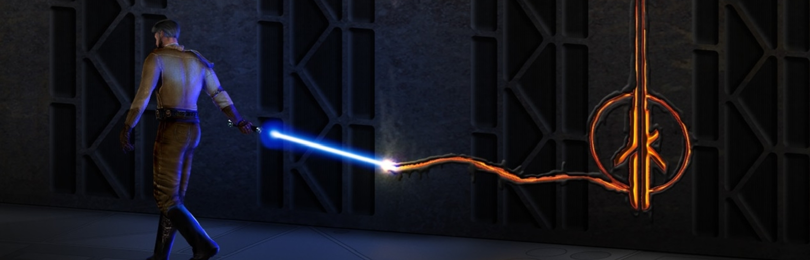

Star Wars

Star Wars video games encompass a diverse range of genres and titles that bring the beloved science fiction universe to interactive life for fans and gamers alike. Developed by various studios and published by different companies over the years, these games have been available on a multitude of platforms since the release of the first title in 1982. Inspired by the rich narrative, iconic characters, and expansive galaxy of the Star Wars franchise, these games often immerse players in engaging storylines that complement and expand upon the films, TV series, and other media.
From action-adventure games like "Star Wars Jedi: Fallen Order" to space combat simulators like "Star Wars: Squadrons," and from classic RPGs like "Star Wars: Knights of the Old Republic" to real-time strategy games like "Star Wars: Empire at War," the Star Wars video game library caters to a wide range of player preferences and interests. With their immersive storytelling, stunning visuals, and thrilling gameplay mechanics, Star Wars video games have captured the imaginations of fans, allowing them to experience the epic saga first-hand and contribute to the ongoing legacy of the franchise.
Pros
- Expansive universe: Take advantage of the rich and diverse universe established in the films, providing players with a wealth of stories, characters, and settings to explore.
- Wide variety of genres: Includes titles in various genres, such as action-adventure, RPG, strategy, and space combat simulators, catering to a broad range of player interests and preferences.
- Immersive storytelling: Feature engaging narratives that delve deeper into the franchise's lore, offering both new and existing fans the opportunity to experience fresh stories and perspectives.
- Iconic characters and locations: Include familiar characters and locations from the films, allowing players to interact with their favorite heroes, villains, and worlds.
- High production values: Feature impressive graphics, sound design, and gameplay mechanics, providing a polished and immersive gaming experience.
- Strong fan community: The passionate fanbase has generated a wealth of fan art, fan fiction, and discussions that contribute to the series' enduring popularity.
- Accessible gameplay: Designed to be accessible to a wide audience, with varying levels of difficulty and gameplay options suitable for both casual and hardcore gamers.
Cons
- Inconsistent quality: Includes titles developed by various studios and published by different companies, resulting in a mixed level of quality and polish across the games.
- Licensing and availability: Some older Star Wars games may not be readily available on modern gaming platforms or may have licensing issues, making it difficult for new players to experience the entire series.
- High expectations: Given the popularity and fanbase of the Star Wars franchise, new game releases often come with high expectations, which can lead to disappointment if they fail to meet those expectations.
- Focus on specific eras: Some Star Wars games may focus on specific time periods or characters, which may be a drawback for players who prefer to explore other aspects of the Star Wars universe.
- Microtransactions and monetization: Some Star Wars games have faced criticism for their use of microtransactions, loot boxes, or other monetization strategies that can detract from the overall gaming experience.
- Iterative gameplay: Certain Star Wars games may rely on similar gameplay mechanics or concepts, which can lead to a sense of repetitiveness or stagnation for some players.
- Canon inconsistencies: As the Star Wars universe has evolved over time, some games may no longer fit within the established canon or continuity, potentially causing confusion or disappointment for fans invested in the lore. more open-world approach.